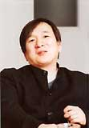

|
 『ポケットモンスター』は、田尻さんが虫捕りやザリガニ釣りなどをしていた少年時代の思い出がベースになっているそうですが、お二人の年齢差による世代のギャップはなかったのでしょうか？ 『ポケットモンスター』は、田尻さんが虫捕りやザリガニ釣りなどをしていた少年時代の思い出がベースになっているそうですが、お二人の年齢差による世代のギャップはなかったのでしょうか？
 石原>> それはないですね。20年も離れていれば話は別でしょうけれど、僕と田尻くんとでは８年くらいの年齢差ですから。 石原>> それはないですね。20年も離れていれば話は別でしょうけれど、僕と田尻くんとでは８年くらいの年齢差ですから。
田尻>> それに僕が育った場所が、東京のなかでも町田というかなり自然の残っている土地だったのも大きいと思います。それこそ名前もわからないような生き物がいっぱいいて、そこでオタマジャクシを捕ったり、ザリガニを釣ったりして育った。それはたぶん、僕より８年早く生まれていた石原さんの少年時代とそれほど変わりはなかったんだと思います。
石原>> さすがに僕の子供時代にはゲームセンターはなかったけどね。
田尻>> そう。それで僕が中学生になった頃から駅前の釣り堀がゲームセンターになったりして、そうすると虫が一切捕れなくなるかわりに『インベーダーゲーム』とか『ギャラクシーウォーズ』ができるようになる。一気に自分の人生の興味がそっち側に傾いていったわけです。もちろん、受験勉強の年代になって塾に行くようになるんだけど、自分としては勉強するよりテレビゲームがしたいから、ゲームセンターが近くにある塾を選んだりして(笑)。それで塾の15分休みとかになると走ってゲームセンターまで行って『ミサイルコマンド』をやって、それからまた急いで戻る、と。結果的にはそういう体験をひとつひとつ思い出して『ポケットモンスター』のなかに詰め込んだっていうことなんですよね。
石原>> 田尻くんには「テレビゲーム以前」と「テレビゲーム以後」という両方の体験があって、それをうまく自分の少年時代の体験としてひとつに集約したわけですね。ポケモンに。
田尻>> あくまでもそれは少年時代の自分なんですよ。だから大人になってからの視線は一切入っていない。子供の視線で世界を見ると、大人とは違うように見えてくるっていう部分にこだわって作ったんです。僕は子供の頃「ちびっこ」とか「ぼうず」って言われるのがすごい嫌いで、そりゃあ大人から見ればそうなんだけど「オレはちびっこじゃない！」っていつも思ってた。で、そういうのが『ポケットモンスター』にも入ってるわけ。だからゲームに登場する少年少女のキャラクターっていうのは対等な関係なんだけど、大人はちょっと自分を見下したような言い方をするんです。でも、大人のトレーナーと戦闘のやりとりをすると、相手がちょっと見直してくれたりする。そういう人間関係を繰り返していって、自分が認められて、少しずつ成長していく。それはすべて僕の個人的な体験の再現だったわけだけれど、そこにこだわったおかげで、世界中の子供もじつはみんな似たような体験をしながら成長していってるんだと、あとになってわかってきた。
 石原>> 前に田尻くんが言ってたんだけど、『ポケットモンスター』の舞台になっているカントーっていうものが、つまり南に海をしたがえていて、北に山地があって、ちょっと東京湾のような入り江をぐるっと回れそうな雰囲気の地形があったときに、それがアメリカだったらカリフォルニア半島の端っこの方にあるんじゃないかとか、あるいはフロリダ半島のこの辺にないだろうかとか、探してみたことがあるんだよね。世界地図で調べると、意外と『ポケモン』が描いた世界と同じような場所が、フラクタル的な相似性を持って世界中のいろんなところに当てはまるんです。
田尻>> それは地形の相似性だけではなくて、たとえば『ポケットモンスター』で最初に１階へ降りると母親がテレビで映画の『スタンドバイミー』を観ているように、少年がなにかこう知的な刺激を得たり、新しい道具を手に入れたりしたときに、自分の見ている世界観が変わるようなことと同じで、それは世界中のどこへ行っても10代くらいの少年の気持ちのなかには共通してあるものなんです。だから、アメリカ向けにフィールドマップのデザインを変えたりしなくても、アメリカで遊んでいる子供たちは自分の知っている地形に照らし合わせて「あの辺の話なんだろうか」と想像して遊んでくれるに違いないと。それで調べてみると、アメリカには1950年代くらいからグレイハウンドバスっていうのがあって、国道が縦横に走っていて、それで18歳くらいになるとバスに乗ってアメリカ一周の旅に出かける体験をたいていの青少年はするっていう話があったりね。だから、やっぱり僕らでいう関東くらいの大きさの世界観。あれがちょうど良かったんですよね。それに、ベトベターなんていう具体的にありそうで、でも抽象性を持っているモンスターにしても、公害の歴史っていうのは日本だけじゃなく世界各地にあって、オタマジャクシを捕りに行った川がヘドロで汚れていたなんてのは、ほとんどの国の子供が体験している。だから、ひとつひとつのモンスターが持っている物語は、多くの人間が世界中で共有できるものなんだろうな、と思うんです。
|
|
|